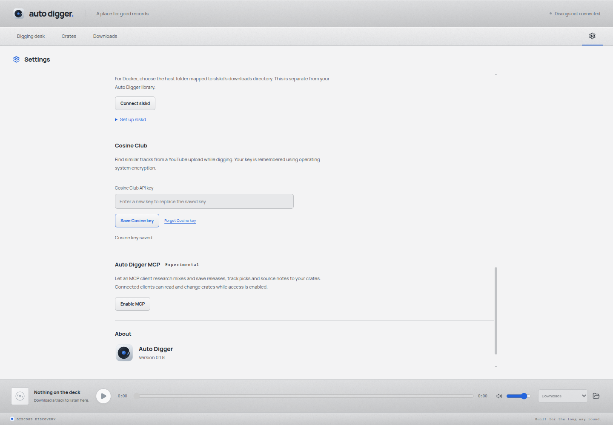
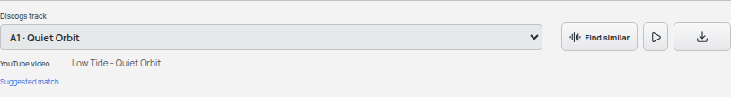
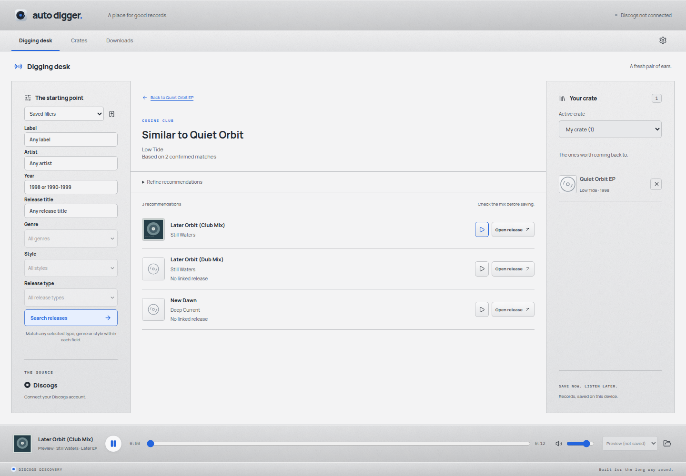

Setup / Recommendations
Cosine Club setup
Follow a track you like to more records with a similar sound.
These steps are the same on Mac, Windows and Linux. You need Auto Digger 0.1.9 or later, an internet connection and a Cosine Club account.
1. Get your Cosine key
- Open Cosine Club's API page in your browser.
- Sign in to your Cosine Club account. If you do not have one, choose Sign up here on its sign-in page.
- Follow the instructions on that page to get an API key, then copy the key.
An API key is a private access code that lets Auto Digger ask Cosine Club for recommendations. It is different from your account password. Keep it private.
2. Connect Auto Digger
- Open Auto Digger and click the Settings cog at the right of the navigation bar.
- Scroll to Cosine Club.
- Paste your key into Cosine Club API key and choose Save Cosine key.
- Look for Cosine key saved. The field clears after saving.
Auto Digger remembers the key on this computer using operating-system encryption. An empty field after saving is normal. To replace it, paste a new key and save again. Forget Cosine key removes the saved connection.

3. Find similar tracks
- Return to Digging desk and open a record, either from your crate or a Discogs search.
- In Audio sources, choose YouTube.
- Find the track you want to explore. If it has alternate uploads, expand that track's row to choose another version.
- Wait for the source check to finish, then choose Find similar beside its preview and download controls.
- Preview the recommendations with their play buttons. Previewing keeps audio temporary until you choose to download it.
Auto Digger searches the artist and full track title first, then checks the YouTube link. It combines recommendations from confirmed matches and removes duplicates. Different mixes remain separate, so listen and check the version before saving.
Use Refine recommendations to narrow results by year. This has its own controls and does not change your digging filters.


4. Open a release and keep digging
Choose Open release when a recommendation has a linked Discogs release. This opens its record in Auto Digger, where you can review the tracklist, preview audio and use Save release to crate.
Check the release and mix before saving. A recommendation is a starting point for digging.
No linked release means Cosine did not provide a Discogs release link. Preview and Open release are unavailable for that result. Use its artist and title to look for the record on Discogs.
Use the Back to… link to return to the recommendation list or the record you started from. Your results and recommendation filters stay available while you explore.
Troubleshooting
- Find similar is missing?
- Check that you are using Auto Digger 0.1.9 or later, save your Cosine key in Settings, then choose YouTube under Audio sources. The action appears beside individual uploads.
- The button is disabled?
- Wait for the source check to finish. If the upload cannot be checked, use Check again or choose another upload.
- The key is saved, but recommendations say it is invalid?
- Saving remembers the key on this device. The first recommendation request checks access with Cosine. Copy your current API key from Cosine's API page and save it again, without extra spaces.
- No confirmed match or no recommendations?
- Cosine may not have that recording or mix in its catalogue. Try another upload of the same track or another track on the EP. You can also check the artist and title on cosine.club.
- Cosine could not be reached, timed out or is busy?
- Check your internet connection. Use Try again to repeat the request without leaving the results page. If the service asks you to slow down, wait before trying again.
- Only some results arrived?
- You can explore the available recommendations. Retry later if Auto Digger reports that part of the request could not finish.
- The key cannot be saved?
- Unlock your computer's password manager or desktop keyring, then retry. Keep keys out of bug reports and screenshots.
Service information: Cosine Club API access and official API reference.